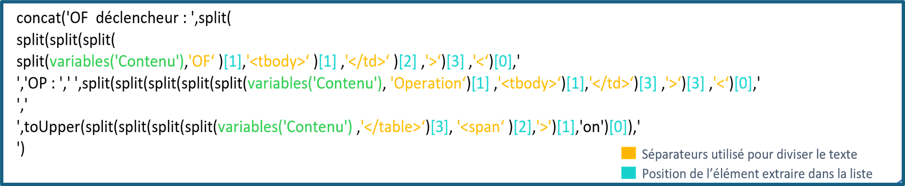

La Maitrise Statistique des Procédés (MSP) est un levier essentiel dans un environnement de production en série, permettant de détecter précocement les dérives de fabrication et de corriger rapidement les écarts avant qu'ils ne génèrent des pièces non conformes en grande quantité.
Défi industriel
Automatiser complètement le processus de traitement des alertes MSP pour éliminer les erreurs humaines et accélérer la réactivité
Objectifs et exigences
Afin d'assurer le suivi du traitement des alertes automatiques générées par le système de détection de déviations, une solution numérique a été développée pour :
Collecter automatiquement les mails d’alerte.
Créer des tâches associées dans Teams.
Centraliser les alertes accessibles à toute l’équipe.
Assurer un suivi rigoureux du traitement des alertes.
Développement de la Solution
La solution repose sur la transformation des mails d’alerte en tâches dans Teams via un script VBA développé par l’ingénieur coordinateur de déploiement numérique. Une fois dans Teams, le mail est converti en tâche dans le Planner grâce à un flux Power Automate conçu pour :
Récupérer et extraire les informations pertinentes du mail.
Assigner automatiquement une tâche avec les bonnes caractéristiques.
Faciliter la gestion et le suivi des alertes.
Fonctionnement du Flux Power Automate
Power Automate permet d’extraire, transformer et gérer les données au sein de l’écosystème Microsoft. En utilisant ses connecteurs, le flux Power interagit avec Outlook, SharePoint, Teams et Power BI pour une automatisation efficace.
Exemple du contenu d'un composant qui récupère une partie de la description de l’alerte :

Déploiement et Accompagnement
La solution a été mise à disposition du Bureau des Méthodes avec un guide d’installation et des ateliers de formation pour garantir une adoption fluide.
Impact et Contribution
Efficacité opérationnelle
Élimination de 100% des ressaisies manuelles d'alertes
Traçabilité
Historique complet et automatique de toutes les actions menées
Réactivité
Réduction du temps de traitement des alertes de 75%
Grâce à cette solution, les équipes peuvent :
Éviter toute ressaisie manuelle des alertes.
Faciliter l’animation du traitement des alertes.
Assurer un suivi efficace avec un historique clair des actions menées.
Compétences développées
Compétences Méthodologiques
Analyse fonctionnelle : Capacité à comprendre et formaliser un besoin métier en le traduisant en une solution technique.
Approche orientée utilisateur : Intégration des contraintes et attentes des utilisateurs finaux dès la conception.
Gestion de projet agile : Structuration du travail en itérations, avec tests, retours et améliorations continues.
Documentation et traçabilité : Rédaction de documents techniques et fonctionnels pour assurer une utilisation et une maintenance efficaces.
Compétences Techniques
Power Automate : Conception et structuration de flux automatisés pour répondre à des problématiques métier.
Microsoft Graph : Utilisation et requêtage d’API Microsoft pour récupérer et exploiter des données.
Microsoft Teams & Planner : Développement de solutions interactives pour la gestion et le suivi des alertes.
Compétences Professionnelles
Travail en équipe : Collaboration avec des profils variés et intégration dans une dynamique collective.
Gestion des imprévus : Adaptation aux aléas techniques et organisationnels en ajustant la solution selon les contraintes rencontrées.